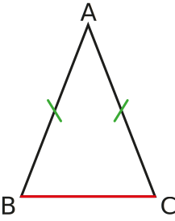
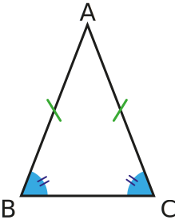

Activité Introduction

- Colorier en rouge les triangles ayant 3 côtés de mêmes longueurs.
- Colorier en vert les triangles ayant seulement 2 côtés de mêmes longueurs.
- Colorier en bleu les triangles ayant un angle droit.
- Colorier en violet les triangles restants.
- Associer chacun des termes suivants à la bonne couleur de triangle :
| Triangle isocèle |
Triangle rectangle |
Triangle quelconque |
Triangle équilatéral |
Triangles :
Un triangle est un polygone à trois côtés.
Triangle isocèle :
Un triangle isocèle est un triangle qui a deux côtés de même longueur.
Exemple :

- Le triangle ABC ci-contre est isocèle en A.
- A est appelé sommet principal du triangle ABC.
- Le segment $[BC]$ est la base du triangle ABC.
Propriété :
Dans un triangle isocèle les angles à la base ont la même mesure et deux côtés ont la même longueur.
Exemple :

Triangle équilatéral :
Un triangle équilatéral est un triangle qui a trois côtés de même longueur.

Le triangle DEF ci-contre est équilatéral.
Propriété :
Dans un triangle équilatéral tous les angles ont la même mesure et tous les côtés ont la même longueur.
Exemple :
Triangle rectangle :
Un triangle rectangle est un triangle qui a deux côtés perpendiculaires.

Le triangle GHI est rectangle en H.
Le segment $[GI]$ est appelé hypoténuse du triangle GHI. (C'est le côté le plus long d'un triangle rectangle)
Constructions
Avec trois longueurs :
Construire un triangle ABC tel que AB = 8cm, AC = 6cm et BC = 4cm.
Avec deux longueurs et un angle :
Construire un triangle ABC tel que AB = 8cm, AC = 5cm et $\widehat{BAC} = 30°$.
Construire un triangle ABC tel que AB = 8cm, BC = 6cm et $\widehat{BAC} = 30°$.
Avec une longueur et deux angles :
Construire un triangle ABC tel que AB = 8cm, $\widehat{BAC} = 30°$ et $\widehat{ABC} = 75°$.